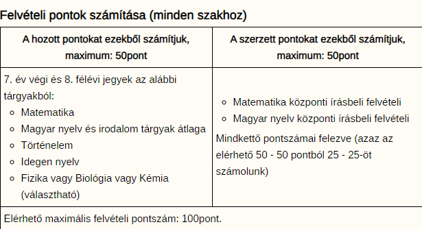
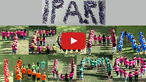

Tanított szakmáink
Felvételi információk
SNI-s, BTM-es tanulók igazolás bemutatásával kérhetnek a felvételivizsgával kapcsolatos mentességet, időhosszabbítást. Egyéb speciális szabályok nem vonatkoznak rájuk, de mindegyik szakon a jelentkező tanulóknak egészségügyileg alkalmasnak kell lenni a szakma elsajátítására. A fő kizáró okok olvashatóak honlapunkon.
Szak kódok a felvételi laphoz

- Vegyész technikus: 3011 Miért válaszd?
- Műanyag feldolgozó technikus: 3016 Miért válaszd?
- Szoftverfejlesztő-, tesztelő: 3013 Miért válaszd?
- Gépgyártás technológiai technikus: 3014 Miért válaszd?
- Mechatronikai technikus: 3015 Miért válaszd?
- Környezetvédelmi technikus: 3012 Miért válaszd?
- Kisgyermekgondozó és –nevelő Miért válaszd?
- angol nyelvi előkészítővel: 3017
- német nyelvi előkészítővel: 3018
Pályaorientációs filmünk nyolcadikosoknak
